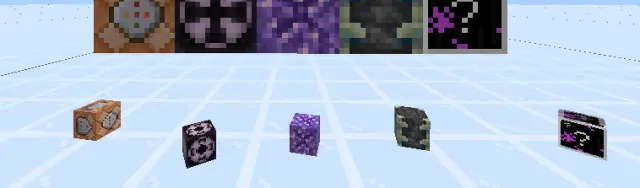
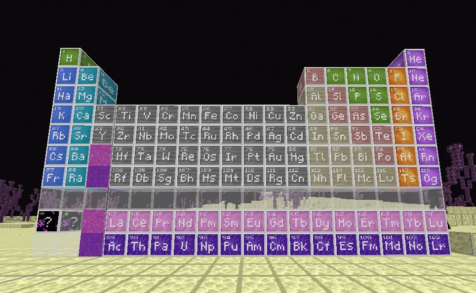
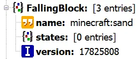
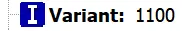
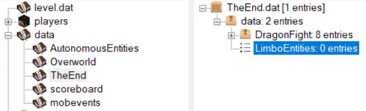
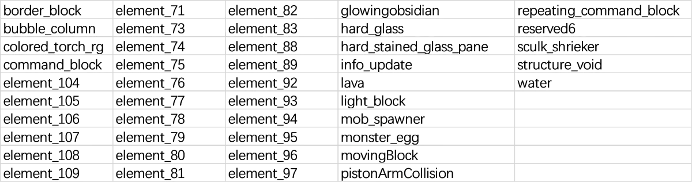
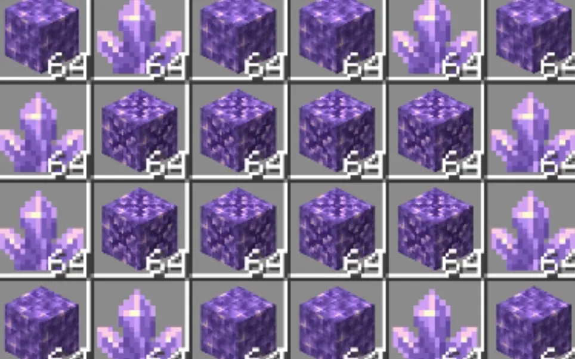

MCBE 通过折跃门跨版本定向获取任意非法方块
作者：panda4994万岁
·
2022年09月12日 19:50
cv18560132
·
游戏漏洞
〇、概述
获取全部非法方块对于硬核minecraft玩家是一件十分有趣的事情。但是，由于高版本折跃门抽奖的“修复”，获取高版本非法方块在之前似乎不再可能。但是在我、orange31、OEOTYAN、SAC成员以及其他开发者的努力之下，发现了折跃门错误读取下落中方块实体数据的bug，揭示了折跃门抽奖的原理，计算出了获取各种方块的途径。通过版本间runtimeid的不同的特性，在SAC生存服成功的定向获取了包括高版本方块在内的非法方块。
一、背景知识
- 什么是 runtimeidRuntimeid 是在游戏开始运行时确定的方块注册顺序。每一个 runtimeid 在服务器运行期间都唯一对应了一个特定状态的方块，这甚至包括了教育版方块。本文提及的 runtimeid 均为方块的，不要混淆。在1.16.40及以前的版本，方块没有固定的 runtimeid。每次游戏重启都会给方块随机分配。在1.16.40之后的版本，这个顺序在原版，以及自定义方块不变的情况下是固定的。不同版本之间这个顺序可能会有所不同。这些顺序可以在 https://github.com/pmmp/BedrockData 种的 canonical_block_states.nbt 文件里找到。在此感谢参与该项目的大佬们的分享。注意，该文件是基岩版独有的 NetworkNBT，其中数据的储存方式和一般的 NBT 文件不同，无法被一般的 NBT 编辑器解析。

元素周期表。获得教育版方块的绝佳例子。在SAC镜像服截图。
- 下落中方块储存方块信息的两种方式原版中所有下落中方块都是 minecraft:falling_block 实体。因此，每个实体都会记录原始方块的数据，以便落地后正确转换。查看一个下落方中方块的实体数据，我们很容易就可以发现有一个名为 FallingBlock 的 TAG_Compound 储存了其所代表的方块的信息 (Fig.1)。不过，通过对比不同方块的下落中方块的实体数据，我们可以发现有一个名为 Variant 的 TAG_Int 发生了变化，这实际上是下落中方块储存方块信息的另一种方式 (Fig.2)。Variant 的值就等于对应方块的 runtimeid。
- 不同情况下对于两种储存方式读取的优先级不同在大多数时候，游戏优先使用 FallingBlock 中储存的数据，并尝试重置 Variant 的值。当 FallingBlock 数据丢失时，游戏会使用 Variant 来重置 FallingBlock 并确定下落中方块对应的方块。然而，当下落中方块进入折跃门并且对面区块并未被加载时，其会被暂存在存档的 data/TheEnd/data/LimboEntities 中 (Fig.3)。当游戏读取该实体时，会使用 Variant 确定对应方块，并忽视 FallingBlock。

Fig.1 下落中的沙子 FallingBlock 属性

Fig.2 某版本下落中的沙子 Variant 属性

Fig.3 利用 MCC ToolChest 查看 LimboEntities
二、下落中方块转换的基本原理
由于下落中方块的 FallingBlock 属性储存着详细的方块数据，难以改变。因此转换方块的核心就是通过种种手段变换实体的 Variant 属性或者改变游戏给方块分配的 runtimeid，并让下落中的方块从 LimboEntities 中加载，从而实现方块的转换。
- ?~1.16.40 方块抽奖由于这些版本中并没有固定的 runtimeid，因此即使是同种方块，在重启存档之后下落中方块的 Variant 也会发生变化。因此只要将下落中的方块投入折跃门，在不加载折跃门对面区块的情况下重启存档，便可以改变游戏给方块分配的 runtimeid。同时下落中的方块的 Variant 保持不变，还是上一次游戏时对应方块的 runtimeid。于是就变成了一种随机方块。这解释了为什么抽奖时有高概率获得“墙类方块”。墙拥有多种材质，同时墙有着多种不同的连接状态。即使在高版本，不同状态不同材质的墙依然占据所有方块一半左右。
- 1.16.100+ 方块转换由于这些版本拥有了固定的方块注册顺序，所以在不引入行为包的前提下，方块的转换必然涉及版本的升降。所以如果想要在自己的存档中获取高版本非法方块，要提前规划好升级线路。
在了解下落中方块转换的原理之后，可以总结出几种获取高版本任意非法方块的方法。
三、获取全非法方块的具体方法
- 利用runtimeid不定版本联合高版本该方法操作难度较低，但版本跨度相对大，需要目标存档当前版本 ≤ 1.16.40，而且仅能获取目标高版本 runtimeid ≤ 6610 的方块。并且，如果不利用修改过的客户端或者不查看存档数据，操作会较为繁琐。
- 通过跨多个高版本将重力方块转化为非法方块该方法能获取的非法方块种类有限，操作复杂，但胜在没有随机性，适合非酋。通过我自行编写的程序计算出了1.16.100到1.19.20的极限情况下能获取的所有方块名称、详细数据、以及操作途径。但数量过多，所以这里只展示人工筛选出的非法方块，可能遗漏，并且隐去了方块状态，同时不保证能获得物品形式：

从所有可以获得的方块中筛选出的非法方块
- 准备好重力方块
- 查表确认当前版本需要进行的操作，完成后退出游戏
- 查表确定下一版本，升级游戏并返回步骤2，直到达到目标方块。
- 两种方法结合该方法扩大了能够获取的方块的种类，并且是最先被发现的方法。SAC生存第一次尝试获取紫水晶母岩就是使用的这种方法（当时仍未成熟
实际是橘子不懂）。这里仅简述该方法。

【游戏奇迹】原版生存获取紫水晶母岩物品教程（MCBE 1.16.40）
7万观看 22弹幕 · 02:29
B 站视频 »
- 在低版本抽取特定的方块。
- 在稍低高版本改变其 Variant 或投入折跃门。可重复该步骤。
- 在目标版本打开游戏，即可获取目标方块。
- 利用行为包改变 runtimeid 分配顺序（歪门）
- 反复升降版本（邪道）
四、碎碎念
本文介绍了下落中方块转换的原理。即利用折跃门优先读取下落中方块 Variant 的特性，同时利用 runtimeid 不定版本、版本间 runtimeid 的不同，定向的获取非法方块。
来讲点发现这玩意的历史吧。最开始是 1.16.40 随机抽取方块，这个大家都知道，不过不清楚它的原理。之后的版本这个 bug 就被“修复”了，不过江雁苍穹私信橘子说这个 bug 其实并没有被完全修复。然后橘子就各种尝试，实际上就是无头苍蝇一样乱撞嘛，毕竟当时谁都不知道这些规律。期间发现了一些规律，不过完全随机，想要落实到生存还是不太现实。后来他利用 1.17.11 + 1.18.32 两个版本发现了一些定向转换的规律，也就是上面的混合方法。但是不知道什么方块能够转换成紫水晶母岩。所以他就准备遍历所有方块。很显然，不利用一些编程的手段想要得到、遍历所有 6610 种方块，反复切换版本，反复加载存档是不太现实的。之后我和茶宝就加入了这个项目。我生成了包含所有 6610 种方块的结构，并且给这些实体加上了独特的 tag，这样方便了之后的检索。同时我利用 cheat engine 消除了折跃门传送冷却，理论上这样可以加速实验，可惜橘子使用的是手机版，并没有帮到他。茶宝生成了 1.18.32 的 runtimeid 表（当时不会解析 NetworkNBT）。橘子就开始利用结构 400 种方块一次的尝试。每试完一组就把存档发给我，我用一个脚本解析方块转换的对应关系。其间 ddf 和幻化成疯大佬给了我很大的帮助。我们终于发现了
minecraft:spruce_standing_sign {ground_sign_direction: 2}
在从 1.17.11 -> 1.18.32 后能够转换成紫水晶母岩。但这并不是故事的终点，橘子发现这些每个组转化的结果会集中在这个表的一些地方（因为我生成的结构里每组都是 runtimeid 相邻的方块，同时跨版本顺序变化不是完全打乱的），同时茶宝提醒下落中的方块的 Variant 等于对应方块的 runtimeid。在一些列实验的佐证下，我们认识到折跃门方块转换实际上是由于读取 Variant 而非 FallingBlock，同时 Variant 代表的 runtimeid 顺序会发生改变导致的结果。这时候我也了解了 NetworkNBT，解析 canonical_block_states.nbt 生成了全版本的 runtimeid 顺序对照表，并通过一些简单的编程获得了全途径表，并总结出了上述几种方法。自此，所有方块的获取途径都已明了。这些表我会在合适的时候发布，如果心急，加入 SAC 内群即可立即获取。本文种包含的信息足够自己生成这些表，你也可以尝试自己制作。
迫害橘子hhh
哈哈，还是彩虹色比较好